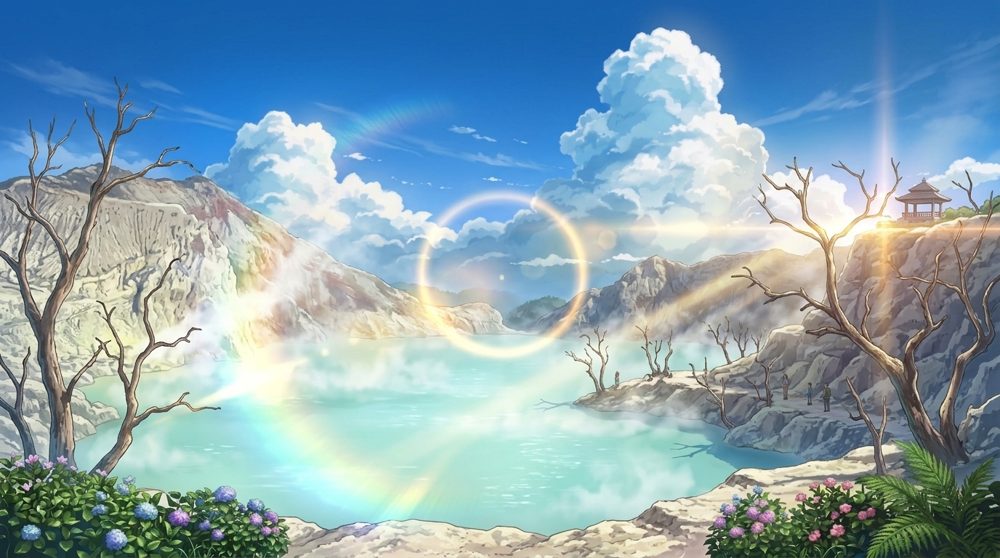
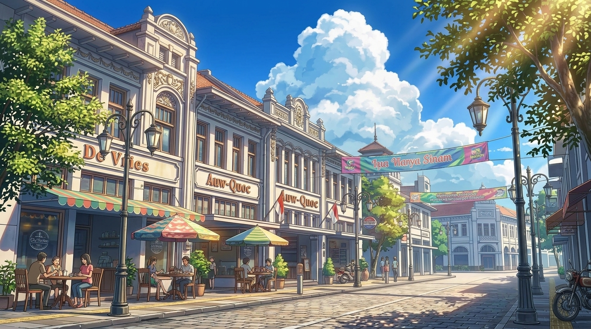
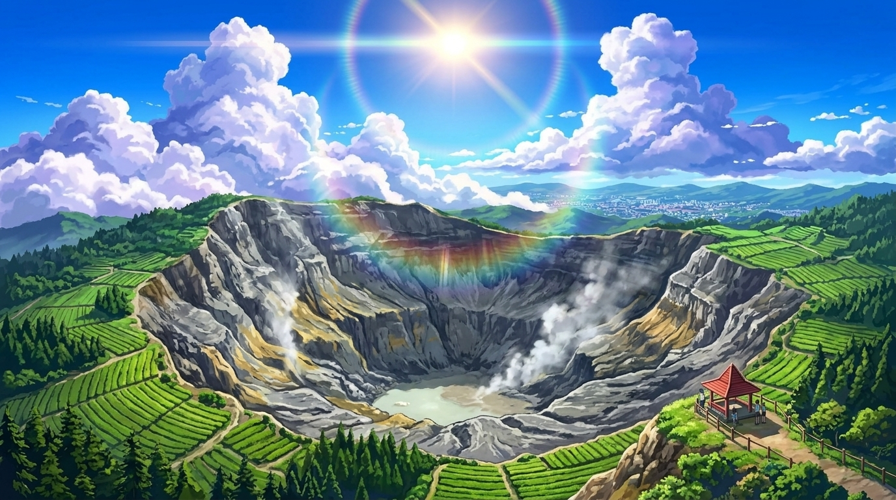

AlamKawah Putih Ciwidey
Danau kawah vulkanik eksotis dengan air berwarna putih kehijauan dan kabut belerang yang magis.
Lihat Detail →Jelajahi keindahan alam, pesona sejarah, dan kelezatan kuliner di Kota Kembang.
Mulai EksplorasiTempat-tempat ikonik yang wajib kamu kunjungi saat berlibur ke Bandung.

AlamDanau kawah vulkanik eksotis dengan air berwarna putih kehijauan dan kabut belerang yang magis.
Lihat Detail →
Sejarah & KotaPusat nostalgia kota Bandung dengan deretan arsitektur kolonial Eropa klasik dan kafe estetik.
Lihat Detail →
PetualanganKawah gunung berapi raksasa yang melegenda, dikelilingi pemandangan alam kebun teh yang asri.
Lihat Detail →Kawah gunung berapi raksasa yang melegenda, dikelilingi pemandangan alam kebun teh yang asri.
Lihat Detail →Kawah gunung berapi raksasa yang melegenda, dikelilingi pemandangan alam kebun teh yang asri.
Lihat Detail →Kawah gunung berapi raksasa yang melegenda, dikelilingi pemandangan alam kebun teh yang asri.
Lihat Detail →Deskripsi singkat tentang apa isi bagian ini.